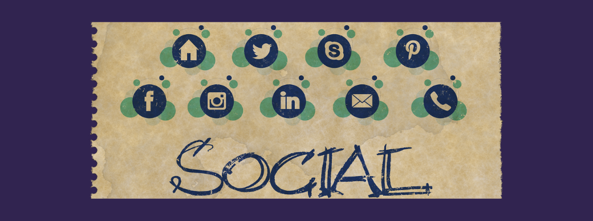

Paid Acquisition
What is paid acquisition all about?
Online ads that allow advertisers to track marketing spend and Return Of Investment in a way that was previously not possible.
Incredibly finite targeting enabled by a deep knowledge of potential customers.
Enables meticulous data-driven optimization, constant testing, and adjustment of ads Accounts.
Most popular market ad options and their perks
● Paid search and Display Network (GDN)
● Search - Targeting people with ‘intent’
● GDN - ads on affiliate network covering over 90% of the web
● Much more diverse ads with Youtube and GDN
■ Paid “social ads” that are very content focused
■ Incredible granularity in targeting: Create specific ads to people based on their
likes, geography, ‘look-alike audiences’
■ The more data points, the more ‘confident’ Facebook feels about delivering ads